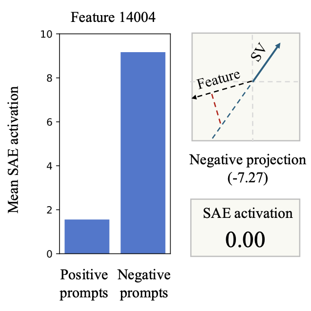
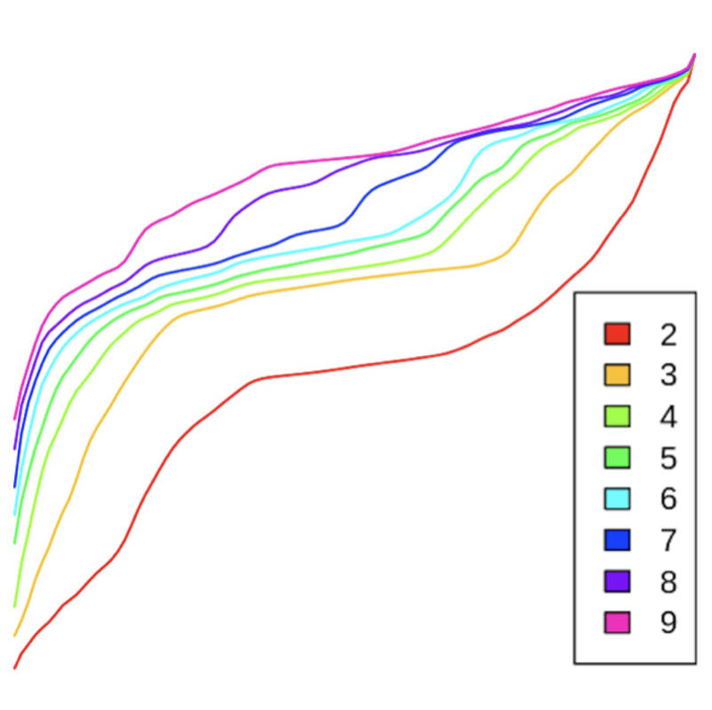

Harry Mayne
PhD researcher at the University of Oxford
LLM explainability & interpretability.
LLM explainability & interpretability.
Research
I'm a PhD researcher at the University of Oxford, where I work on language model explainability and interpretability. My current research explores whether models can reliably explain their outputs in natural language, a key requirement for effective human-computer interaction and potentially a major tool for monitoring to cognition of advanced AI. I also work on mechanistic interpretability problems, though it is less of a priority for me at the moment.
Alongside my main PhD research, I also work on LLM evals and science of evals. My publications include the LingOly reasoning benchmark (NeurIPS 2024 oral, top 0.5% papers) and LingOly-TOO. Beyond individual benchmarks, I’m interested in building more rigorous standards and ways to aggregate the results from many benchmarks. I'm currently involved in several projects aimed at advancing this goal.
I’m a member of the Reasoning with Machines Lab, and am supervised by Prof. Adam Mahdi (Oxford Internet Institute) and Prof. Jakob Foerster (Department of Engineering Sciences).
Alongside my main PhD research, I also work on LLM evals and science of evals. My publications include the LingOly reasoning benchmark (NeurIPS 2024 oral, top 0.5% papers) and LingOly-TOO. Beyond individual benchmarks, I’m interested in building more rigorous standards and ways to aggregate the results from many benchmarks. I'm currently involved in several projects aimed at advancing this goal.
I’m a member of the Reasoning with Machines Lab, and am supervised by Prof. Adam Mahdi (Oxford Internet Institute) and Prof. Jakob Foerster (Department of Engineering Sciences).
Selected Publications



About
DownloadCV
I'm now in the second year of my PhD. I've had a bit of an unusual path to get to where I am today, having originally studied economics.
Education
Oxford Internet Institute, University of Oxford
DPhil Social Data Science
Researching language model explainability and interpretability
Researching language model explainability and interpretability
2023 - 2026
Oxford Internet Institute, University of Oxford
MSc Social Data Science
Distinction, 77%
Oxford Internet Institute Thesis Prize for best dissertation (88%)
Distinction, 77%
Oxford Internet Institute Thesis Prize for best dissertation (88%)
2022 - 2023
Selwyn College, University of Cambridge
BA Economics
Double First Class, top 10% of cohort
Awarded the Patrick Cross Prize for exceptional performance in the Economics Tripos
Double First Class, top 10% of cohort
Awarded the Patrick Cross Prize for exceptional performance in the Economics Tripos
2019 - 2022
Grants
Grand Union DPT, Economic and Social Research Council
Full PhD Scholarship
2022 - 2026
Blog and resources
University of Cambridge
Economics Interview Questions
Read More